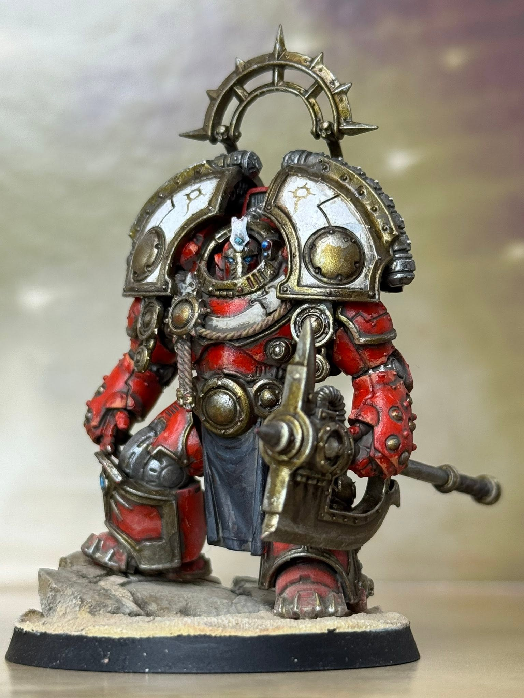

Commandement de la force
Nephren-Kâ
Magister Templi du culte de la Prémonition
Praetor · armure Terminator Saturnine

Il a vu Prospero brûler des années avant les loups. C'est là toute
son histoire, et toute sa faute. Le culte de la Prémonition, dont
il est le Magister Templi, poussait la divination plus loin
qu'aucune autre branche de la XVe Légion : non pas lire
l'instant qui vient, mais la forme des siècles. Les fluctuations
du Warp étant ce qu'elles sont, la vision n'était jamais précise
dans le TEMPS — Nephren-Kâ savait que Prospero tomberait, il ne
savait pas quel jour.
Il a donc fait le choix qui le définit encore : ne pas avertir,
mais préparer. Ne pas mourir avec ses frères, mais survivre pour
que les Thousand Sons puissent renaître. Ceux qui lui reprochent
d'avoir abandonné Tizca ont raison. Ceux qui lisent aujourd'hui
les ouvrages de l'Archivum Ptaax lui doivent tout. Les deux
propositions sont vraies en même temps, et il ne cherche pas à les
réconcilier.
Lors de l'assaut des Space Wolves, sa
fraternité n'a pas défendu une seule rue. Sa priorité était
ailleurs : vider l'Archivum Ptaax et les arsenaux qui le
jouxtaient. Ouvrages antiques, savoirs interdits, et surtout un
stock considérable d'armures Terminator Saturnine ouvragées —
patiemment accumulé, jamais déclaré à Terra. C'est ce qui explique
l'usage hautement anormal que cette branche en fait aujourd'hui :
là où une Légion aligne une escouade, la Prémonition en aligne
quatre.
Titre d'usage
Magister Templi. Pas capitaine, pas seigneur — un titre de
bibliothèque, gardé exprès. Il ne commande pas une compagnie ;
il tient un temple, et un temple contient des livres avant de
contenir des hommes.
Manière de commander
Par anticipation. Les ordres sont donnés avant que la situation
ne se présente, et paraissent absurdes jusqu'à ce qu'elle se
présente. Nul ne discute deux fois. Ceux qui ont discuté une
fois sont restés sur Prospero.
Charge morale
Il a laissé mourir des frères qu'il aurait pu prévenir, parce
que les prévenir aurait dispersé la fraternité et perdu
l'Archivum. Il ne s'en justifie pas et n'en parle jamais. Ceux
qui l'ont suivi savent qu'ils sont, littéralement, ce qui a été
sauvé à leur place.
Le fil d'Ahriman
On raconte que le Maître Archiviste
Ahzek Ahriman serait parvenu à
le contacter. Rien n'est confirmé, et Nephren-Kâ ne dément pas.
Les deux hommes poursuivent peut-être le même objectif : sauver
la Légion d'elle-même. Restent deux questions ouvertes —
à quel prix, et lequel des deux paiera.